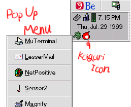

<!doctype html public "-//W3C//DTD HTML 4.0//EN" "http://www.w3.org/TR/REC-html32#dtd">
<html>
<head>
<title>Kagari Users Manual/Deskbar Menu</title>
<meta http-equiv="Content-Type" content="text/html; charset=ISO-2022-JP">
</head>
<body bgcolor="#FFFFFF" text="#505050" vlink="#c0c0c0" link="#404040" alink="#000000">

<div align="center">

<table align="center" width = "90%"><tr><td>

<br
clear="all">
<br><br>

<div align="center">$B!|(B</div><br><br>
<h1>Deskbar Menu</h1>

<div align="center">

</div>

<p>
Click an application icon, the app launches and app's priority raise
<ul>
<li>More
<dd>items that can not displayed on top of menu.
<li>Preferences
<dd>Open Preferences.
<li>About Kagari
<dd>Open About Box.
<li>Quit
<dd>Quit Kagari.
</ul>
</p>
<br><br>


</td></tr></table>

</div>

</body>
</html>

